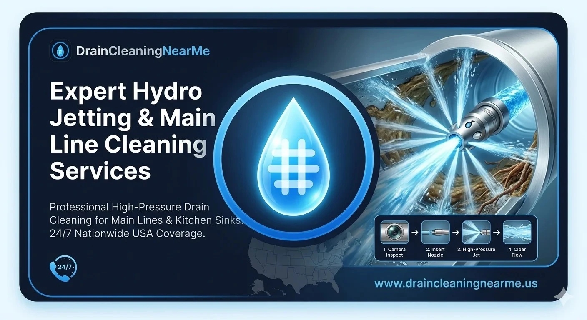

Professional Hydro Jetting & Sewer Line Cleaning
When "drain cleaning near me" or standard snaking is not enough, hydro jetting and professional sewer line cleaning is the ultimate solution. This powerful technology uses high-pressure water jets to blast through the toughest grease, roots and debris, restoring your pipes to like-new condition.
At DrainCleaningNearMe, we connect you with licensed local experts who specialize in hydro jetting services for both residential and commercial properties nationwide. Available 24/7, our network provides fast help for main line clogs and recurring drainage problems. Call now to schedule your hydro jetting pipe cleaning and experience a permanent fix for your slow or blocked drains.

What Is Hydro Jetting? (Advanced Drain Cleaning Technology)
How Hydro Jetting Works
Hydro jetting is an advanced hydro jetting cleaning method that uses high-pressure water; typically between 1,500 and 8,000 PSI, to remove clogs and scour pipe walls clean. A specialized nozzle is fed into the pipe and connected to a high-pressure pump. The nozzle blasts water in multiple directions as it moves through your plumbing system, so it does not just punch a hole through the clog; it cleans the entire pipe interior.
Key steps in a typical hydro jetting process include:
- Inspecting the line (often with a camera) to understand clog location and pipe condition.
- Inserting a hydro jet nozzle into the drain or cleanout.
- Gradually increasing water pressure while feeding the hose through the line.
- Moving the nozzle back and forth to scrub and flush away debris.
- Flushing remaining residue out of the system for a clean, free-flowing pipe.
Compared to traditional snaking, hydro jet drain cleaning is far more thorough and is often the preferred option for recurring or severe clogs.
What Problems Can Hydro Jetting Solve?
Ideal Situations for Hydro Jetting Services
Hydro jetting is especially effective for stubborn, recurring or large-scale drain and sewer issues, including:
- Grease and oil buildup in kitchen drains and restaurant lines. Over time, grease solidifies and coats pipe walls, trapping food particles and causing slow or blocked drains.
- Soap scum, sludge and hair in bathroom lines. Soap, shampoo and hair create thick deposits that narrow pipes and lead to frequent clogs.
- Tree root intrusion in sewer and main lines. Fine roots can enter small cracks and grow into dense mats; hydro jetting can cut and flush many root intrusions when combined with proper attachments.
- Mineral scale from hard water. Calcium and magnesium deposits gradually reduce pipe diameter and must be mechanically removed in many cases.
- Recurring clogs that keep coming back. If you have snaked or cleared a line multiple times and the problem returns, hydro jetting is often the next and best step.
For many property owners, hydro jet drain cleaning near me becomes the go-to solution when standard drain cleaning fails to provide lasting results.
Why Hydro Jetting Is Often the Best Solution
Deep & Complete Cleaning
Traditional snaking breaks a path through the clog, but it often leaves residue on pipe walls. Hydro jet drain cleaning uses high-pressure water to scrub the full pipe circumference, removing grease, sludge and buildup.
Prevents Future Clogs
By clearing out all soft deposits and debris, hydro jetting services significantly reduce the chance of recurring blockages. This makes it a smart preventive maintenance option for both homes and commercial properties.
Eco-Friendly & Chemical-Free
Hydro jetting relies on water rather than harsh chemical cleaners, making it safer for your plumbing system, your household or staff, and the environment.
Improves Drain & Sewer Performance
Once buildup is removed, pipes regain more of their original internal diameter, which restores proper flow, reduces gurgling, and helps your entire system perform closer to “like new.”
Handles Severe Blockages
Used with the right pressure and nozzle type, high-pressure drain cleaning is powerful enough to cut through heavy grease deposits, thick sludge, and many tree root intrusions.
Hydro Jetting vs Traditional Drain Cleaning
Snaking vs Hydro Jetting (At a Glance)
| Method | How It Works | Typical Result |
|---|---|---|
| Snaking | Cuts a path through the clog | Opens a channel but leaves residue behind |
| Hydro Jetting | High-pressure water cleans entire pipe interior | Fully cleans and clears the full pipe length |
Snaking is often suitable for simple, one-time clogs. For recurring issues, heavy grease or long main lines, hydro jetting services are usually the preferred long-term solution.
Our Hydro Jetting Services
At DrainCleaningNearMe, we connect you with local professionals who provide hydro jetting services near you for a wide variety of applications.
Hydro Jetting Kitchen Sink & Kitchen Lines
Grease-heavy kitchen drains are a prime candidate for hydro jetting kitchen sink and branch lines. Our network can break down stubborn grease, restore proper flow, and provide preventive maintenance for homes and restaurants.
Bathroom & Secondary Line Hydro Jetting
For properties with recurring clogs in bathroom or secondary drains, carefully calibrated hydro jetting cleaning can remove soap scum, hair and organic sludge to improve drainage.
Main Sewer Line Hydro Jetting
Sewer line hydro jetting is often used when multiple fixtures back up or when there is a suspected main line clog. Technicians use specialized services to clear roots, grease and heavy deposits. Learn more →
Commercial Hydro Jetting
For restaurants, hotels, and industrial facilities, commercial hydro jetting near you is ideal for routine maintenance of grease-laden drains and preventing surprise shutdowns.
Septic & Exterior Line Hydro Jetting
In some areas, septic hydro jetting near you may be used to clean lines leading to or from septic systems, as well as exterior drainage lines and storm drains.
Why Choose DrainCleaningNearMe for Hydro Jetting?
24/7 Availability for Urgent Needs
When you are facing a severe clog or sewer backup, you do not have time to wait. We help you find hydro jetting near you professionals who offer 24/7 emergency response.
Fast Local Technician Dispatch
Instead of calling around, connect with trusted hydro jetting companies near you already working in your area for shorter wait times and local expertise.
Licensed Pros & Advanced Equipment
Our providers typically use commercial-grade equipment: high-pressure jetting machines, various nozzles for grease/roots/scale, and camera inspection tools.
Safe, Damage-Conscious Methods
Hydro jetting must be matched to pipe material and condition. Local professionals inspect for weak pipes first and adjust PSI levels appropriately.
Simple 4-Step Hydro Jetting Process
1. Call or Request Service (24/7)
Reach out when dealing with recurring or severe clogs. Mention your interest in hydro jet pipe cleaning or sewer hydro jetting.
2. Describe Your Drain Problem
Provide details: which fixtures are backing up, how long it's been happening, and if you've tried snaking already.
3. On-Site Inspection & Confirmation
Technicians inspect access points and clean-outs. They use camera inspection if necessary to review pipe condition and safety.
4. Professional Jetting & Final Check
The plumber performs customized hydro jet cleaning, flushes debris, and verifies restored flow with a final check.
Frequently Asked Questions
When performed by licensed professionals using proper pressure for your pipe type, hydro jetting services are considered safe for most residential and commercial plumbing systems. Technicians inspect pipe condition first and adjust PSI to avoid damage.
Snaking breaks up or dislodges a clog, but usually leaves residue along the pipe walls. Hydro jet drain cleaning uses high-pressure water to clean the entire pipe interior, removing grease, sludge and deposits for longer-lasting results.
Not always. Simple, isolated clogs may be resolved with standard drain cleaning. Hydro jetting services are best for recurring problems, heavy buildup or main line issues where you want a deep, comprehensive cleaning.
In many cases, Yes. With the right nozzle and pressure, sewer line hydro jetting can cut through many intrusive roots and flush them out, though severely damaged or collapsed pipes may still need repair or replacement.
For homes, hydro jetting is often used only when needed for serious or recurring clogs. For restaurants and busy commercial properties, many experts recommend scheduled commercial hydro jetting near you annually or semi-annually to prevent shutdowns.
Actionable Tips: When & How to Use Hydro Jetting Wisely
- As Maintenance tool: Use hydro jetting periodically if you manage restaurants, commercial kitchens or older properties with known buildup issues.
- Combine with Inspections: Pair hydro jetting with camera inspections to document pipe condition for future planning or potential replacements.
- Avoid Chemicals: Avoid relying on harsh chemical cleaners that can weaken pipes; hydro jetting is generally safer and more thorough.
- Ask About Frequency: Many commercial sites schedule hydro jetting annually or semi-annually, while homes may only need it occasionally.
Our Other Services
Kitchen Sink Services
Fast removal of grease and food clogs in your kitchen drains. Explore →
Bathroom Drain Services
Expert cleaning for hair and soap scum blockages in tubs and sinks. Explore →
Emergency Drain Services
24/7 rapid response for urgent backups and sewer issues. Explore →
Drain Camera Inspection
Advanced video diagnostics to find the root cause of clogs. Explore →
Conclusion: Get Fast Hydro Jetting Near You
If you are tired of fighting the same clogs or dealing with slow drains and sewer backups, it is time to upgrade from basic snaking to professional hydro jet drain cleaning. Through our Hydro Jetting & Cleaning Services, DrainCleaningNearMe connects you with trusted local experts.
24/7 high-pressure hydro jetting · Local response nationwide · Licensed professionals & advanced equipment